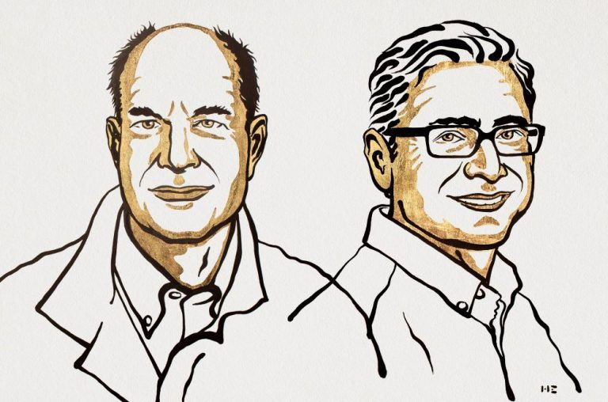

Nobel de Medicina 2021 para los descubridores de los receptores de la temperatura y el tacto
David Julius y Ardem Patapoutian reciben el galardón de la Real Academia de las Ciencias de Suecia por sus grandes aportaciones al estudio de cómo nuestro sistema nervioso siente el calor, el frío o los impulsos mecánicos.

La percepción de la temperatura y el tacto son dos de las claves evolutivas de miles de especies de nuestro planeta y el ser humano no es una excepción. Nuestra relación con el entorno que nos rodea ha dictado nuestros patrones de comportamiento desde hace milenios y ha condicionado nuestras decisiones.
Sin embargo, notar frío, calor o la diferencia entre una superficie lisa y otra rugosa son sensaciones que damos por hecho en el día a día sin saber cómo se producen los impulsos nerviosos que nos permiten percibirlas. David Julius y Ardem Patapoutian han conseguido la solución a estas incógnitas, un esfuerzo que ha reconocido la Real Academia de las Ciencias de Suecia, en Estocolmo, galardonándoles con el Premio Nobel de Medicina o Fisiología de 2021.